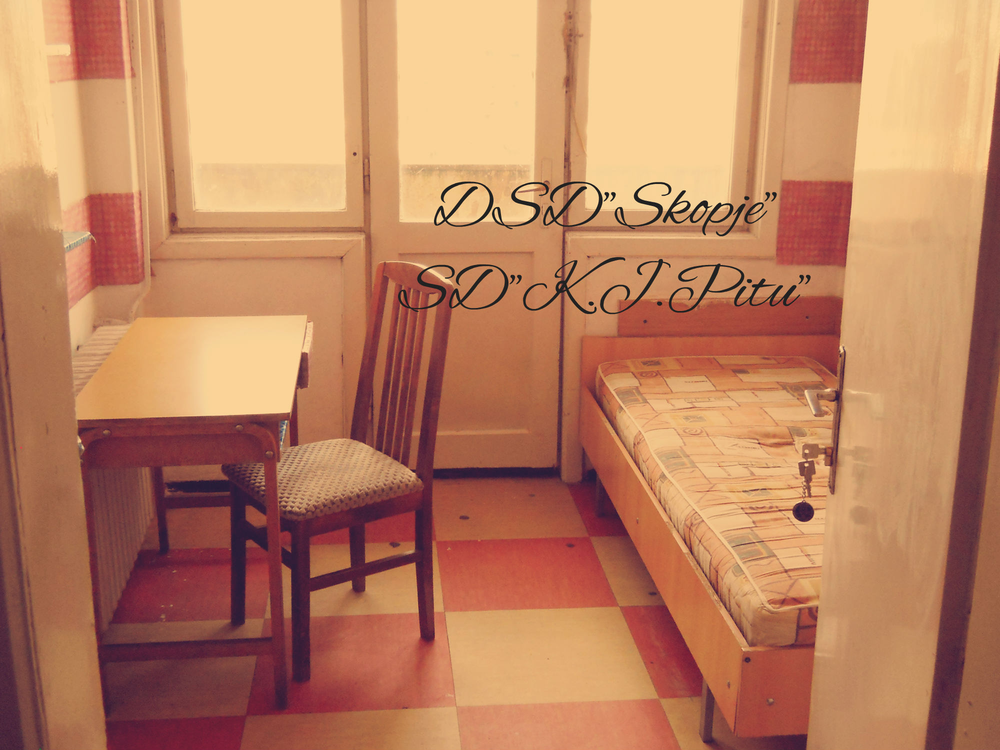
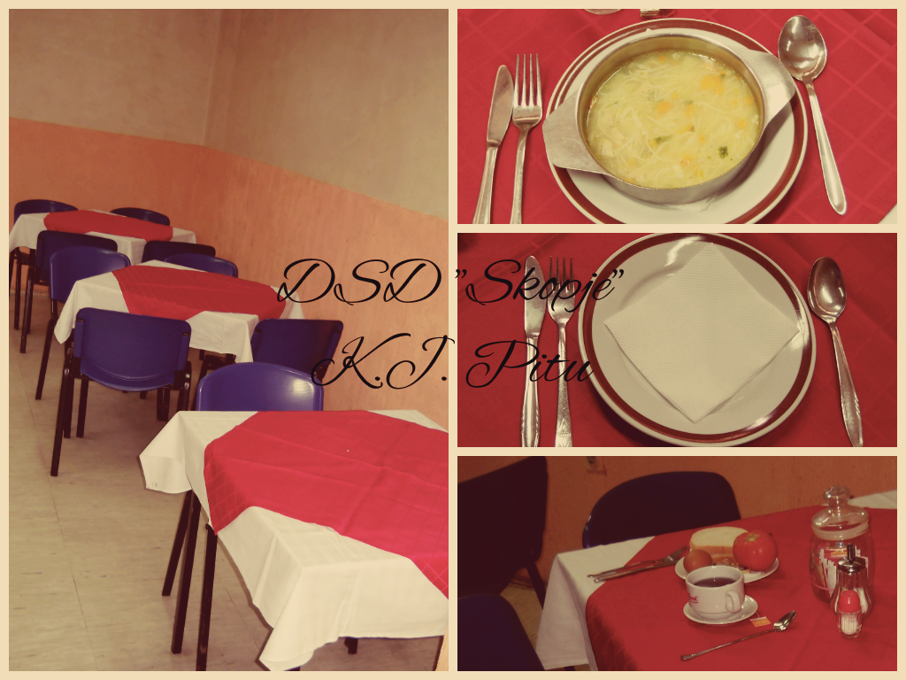
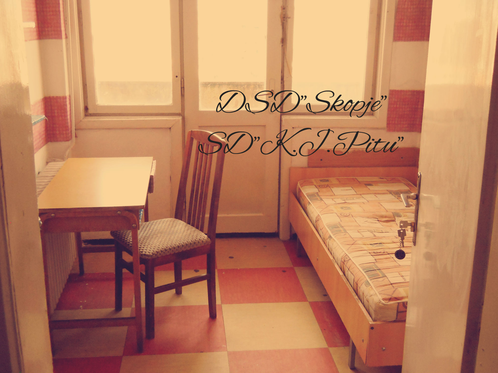
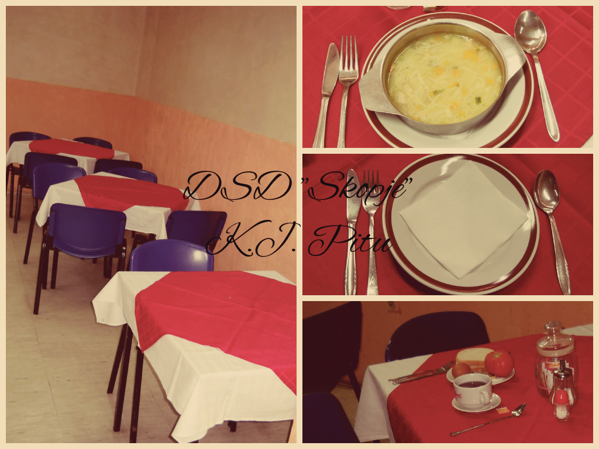

Студентски дом Кузман Јосифовски Питу
Студентскиот дом Кузман Јосифовски Питу се наоѓа во централното градско подрачје на булеварот „Митрополит Теодосиј Гологанов“ б 26. Во склоп на домот има двор со зеленило и клупи за одмор и релаксација на студентите.
Овој дом е со вкупен капацитет од 496 легла распоредени во еднокреветни , двокреветни и трикрреветни соби. Собите имаат заеднички бањи.
Домот располага со ресторан и бифе каде студентите можат да го остварат своето право на топол оброк , читална во која можат да ги подготвуваат
своите колоквиуми и испити и библиотека во која може да се најде најразлична литература.
Во непосредна близина на овој дом се наоѓа Приватниот Европски универзитет ЕУРМ , Градежниот
факултет, Архитектонски факултет, Стоматолошки факултет , Медицински факултет , Факултет за физичко образование, спорт и здравје, но и
централните автобуски постојки „Рекорд“ и „Ким“ на кои што сообраќаат речиси сите автобуски линии кои ќе ве поврзат со секој дел од градот.
За сите оние кои сакаат своето слободно време да го поминат во забава и релаксација тука буквално се Ви е на дланка.
Во близина на домот се Градскиот парк, Градскиот стадион, Грдскиот трговски центар, Трговскиот центар Рамстор, кејот на Вардар , Плоштад Македонија,
Македонската опера и балет , театри , музеи.
| Автобуска линија | Од | До |
|---|---|---|
| 2 | Сарај | Автокоманда |
| 24 | Тафталиџе | Кисела Вода |
| 22 | Волково | Транспортен центар |
| 4 | 11-ти Октомври | Хром |
| 5 | Лисиче | Дексион |
| 50 | Хиподром | Клинички Центар |
Информации и контакт :
075/286-173
 


